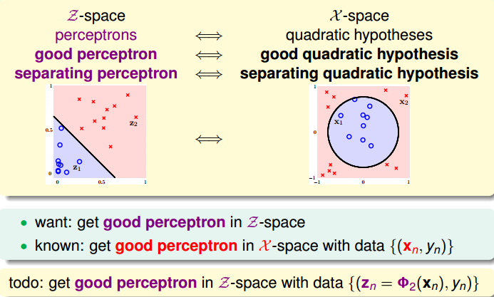
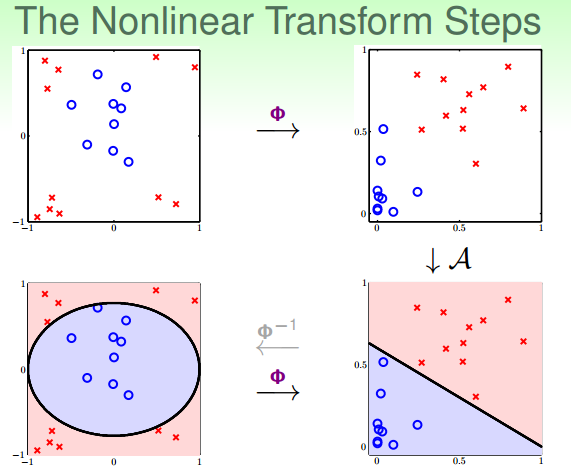
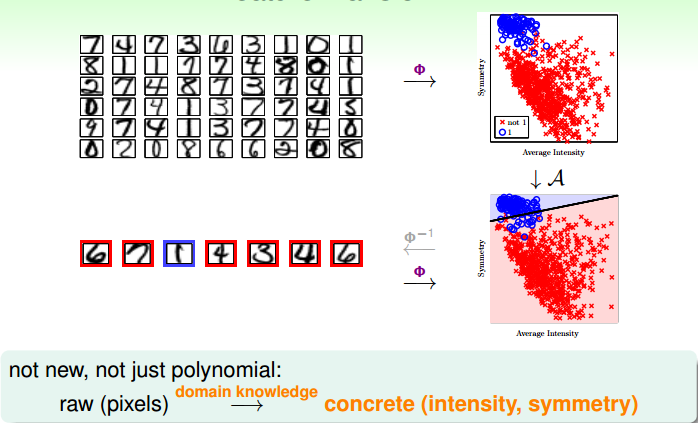

上一節課，我們介紹了分類問題的三種線性模型，可以用來解決 binary classification 和 multiclass classification 問題。本節課主要介紹非線性的模型來解決分類問題。
# Quadratic Hypothesis
之前介紹的線性模型，在 2D 平面上是一條直線，在 3D 空間中是一個平面。數學上，我們用線性得分函數 s 來表示：。其中，x 為特徵值向量，w 為權重，s 是線性的。
線性模型的優點就是，它的 VC Dimension 比較小，保證了。
但是缺點也很明顯，對某些非線性問題，可能會造成 很大，雖然，但是也造成 很大，分類效果不佳。
為了解決線性模型的缺點，我們可以使用非線性模型來進行分類。例如資料集 D 不是線性可分的，而是圓形可分的，圓形內部是正類，外面是負類。假設它的 hypotheses 可以寫成：
基於這種非線性思想，之前討論的 PLA、Regression 問題都可以有非線性的形式進行求解。
下面介紹如何設計這些非線性模型的演算法。還是上面介紹的平面圓形分類例子，它的 h (x) 的權重 w0=0.6，w1=-1，w2=-1，但是 h (x) 的特徵不是線性模型的，而是。我們令， ，，那麼，h (x) 變成：
這種 的轉換可以看成是 x 空間的點映射到 z 空間中去，而在 z 域中，可以用一條直線進行分類，也就是從 x 空間的圓形可分映射到 z 空間的線性可分。z 域中的直線對應於 x 域中的圓形。因此，我們把 這個過程稱之為特徵轉換（Feature Transform）。通過這種特徵轉換，可以將非線性模型轉換為另一個域中的線性模型。
已知 x 域中圓形可分在 z 域中是線性可分的，那麼反過來，如果在 z 域中線性可分，是否在 x 域中一定是圓形可分的呢？答案是否定的。由於權重向量 w 取值不同，x 域中的 hypothesis 可能是圓形、橢圓、雙曲線等等多種情況。
目前討論的 x 域中的圓形都是圓心過原點的，對於圓心不過原點的一般情況， 映射公式包含的所有項為：
也就是說，對於二次 hypothesis，它包含二次項、一次項和常數項 1，z 域中每一條線對應 x 域中的某二次曲線的分類方式，也許是圓，也許是橢圓，也許是雙曲線等等。那麼 z 域中的 hypothesis 可以寫成：
# Nonlinear Transform
上一部分我們定義了什麼了二次 hypothesis，那麼這部分將介紹如何設計一個好的二次 hypothesis 來達到良好的分類效果。那麼目標就是在 z 域中設計一個最佳的分類線。

其實，做法很簡單，利用映射變換的思想，通過映射關係，把 x 域中的最高階二次的多項式轉換為 z 域中的一次向量，也就是從 quardratic hypothesis 轉換成了 perceptrons 問題。用 z 值代替 x 多項式，其中向量 z 的個數與 x 域中 x 多項式的個數一致（包含常數項）。這樣就可以在 z 域中利用線性分類模型進行分類訓練。訓練好的線性模型之後，再將 z 替換為 x 的多項式就可以了。具體過程如下：

整個過程就是通過映射關係，換個空間去做線性分類，重點包括兩個：
- 特徵轉換
- 訓練線性模型
其實，我們以前處理機器學習問題的時候，已經做過類似的特徵變換了。比如數位識別問題，我們從原始的圖元值特徵轉換為一些實際的 concrete 特徵，比如密度、對稱性等等，這也用到了 feature transform 的思想。

# Price of Nonlinear Transform
若 x 特徵維度是 d 維的，也就是包含 d 個特徵，那麼二次多項式個數，即 z 域特徵維度是：
如果 x 特徵維度是 2 維的，即，那麼它的二次多項式為，有 6 個。
現在，如果階數更高，假設階數為 Q，那麼對於 x 特徵維度是 d 維的，它的 z 域特徵維度為：
由上式可以看出，計算 z 域特徵維度個數的時間複雜度是 Q 的 d 次方，隨著 Q 和 d 的增大，計算量會變得很大。同時，空間複雜度也大。也就是說，這種特徵變換的一個代價是計算的時間、空間複雜度都比較大。
另一方面，z 域中特徵個數隨著 Q 和 d 增加變得很大，同時權重 w 也會增大，即自由度增加，VC Dimension 增大。令 z 域中的特徵維度是，則在在域中，任何 的輸入都不能被 shattered；
同樣，在 x 域中，任何 的輸入也不能被 shattered。 是 VC Dimension 的上界，如果 很大的時候，相應的 VC Dimension 就會很大。根據之前章節課程的討論，VC Dimension 過大，模型的泛化能力會比較差。
下面通過一個例子來解釋為什麼 VC Dimension 過大，會造成不好的分類效果：
上圖中，左邊是用直線進行線性分類，有部分點分類錯誤；右邊是用四次曲線進行非線性分類，所有點都分類正確，那麼哪一個分類效果好呢？單從平面上這些訓練資料來看，四次曲線的分類效果更好，但是四次曲線模型很容易帶來過擬合的問題，雖然它的 比較小，從泛化能力上來說，還是左邊的分類器更好一些。也就是說 VC Dimension 過大會帶來過擬合問題， 不能太大了。
那麼如何選擇合適的 Q，來保證不會出現過擬合問題，使模型的泛化能力強呢？一般情況下，為了儘量減少特徵自由度，我們會根據訓練樣本的分佈情況，人為地減少、省略一些項。但是，這種人為地刪減特徵會帶來一些 “自我分析” 代價，雖然對訓練樣本分類效果好，但是對訓練樣本外的樣本，不一定效果好。所以，一般情況下，還是要保存所有的多項式特徵，避免對訓練樣本的人為選擇。
# Structured Hypothesis Sets
下面，我們討論一下從 x 域到 z 域的多項式變換。
首先，如果特徵維度只有 1 維的話，那麼變換多項式只有常數項：
如果特徵維度是兩維的，變換多項式包含了一維的：
如果特徵維度是三維的，變換多項式包含了二維的：
以此類推，如果特徵維度是 Q 次，那麼它的變換多項式為：
那麼對於不同階次構成的 hypothesis 有如下關係：
我們把這種結構叫做 Structured Hypothesis Sets：
那麼對於這種 Structured Hypothesis Sets，它們的 VC Dimension 滿足下列關係：
它的 滿足下列關係：
從上圖中也可以看到，隨著變換多項式的階數增大，雖然 逐漸減小，但是 model complexity 會逐漸增大，造成 很大，所以階數不能太高。
那麼，如果選擇的階數很大，確實能使 $E_{in} 接近於 0，但是泛化能力通常很差，我們把這種情況叫做 tempting sin。
所以，一般最合適的做法是先從低階開始，如先選擇一階 hypothesis，看看 是否很小，如果 足夠小的話就選擇一階，如果 大的話，再逐漸增加階數，直到滿足要求為止。也就是說，儘量選擇低階的 hypothes，這樣才能得到較強的泛化能力。
# Conclusion
這節課主要介紹了非線性分類模型，通過非線性變換，將非線性模型映射到另一個空間，轉換為線性模型，再來進行線性分類。
本節課完整介紹了非線性變換的整體流程，以及非線性變換可能會帶來的一些問題：時間複雜度和空間複雜度的增加。
最後介紹了在要付出代價的情況下，使用非線性變換的最安全的做法，盡可能使用簡單的模型，而不是模型越複雜越好。